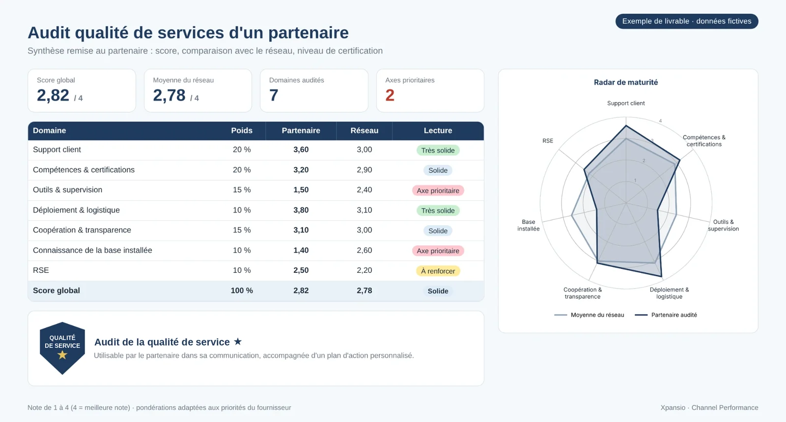

La qualité de service de vos partenaires est-elle à la hauteur de votre marque ?
Un constructeur IT dont l’offre est vendue et maintenue par un réseau de partenaires.
Pour le client final, la qualité du service rendu par le partenaire, c’est la qualité de la marque. Or le constructeur n’avait pas de vision objective et comparable de la qualité de service de ses partenaires.
Mesurer cette qualité de façon juste et partagée, repérer les bonnes pratiques, aider chaque partenaire à progresser, et adapter l’accompagnement du constructeur au niveau de chacun.
- Conception d’une grille d’audit sur 7 domaines : support client, compétences et certifications, outils et supervision, déploiement et logistique, coopération, connaissance de la base installée, RSE.
- Conception de la méthode de notation : score par domaine et score global, comparés à la moyenne du réseau.
- Conception d’un programme de certification à 3 niveaux, que le partenaire peut utiliser dans sa communication.
- Conception du rapport d’audit type, avec un plan d’action personnalisé construit avec chaque partenaire.
- Mise à disposition de ces outils aux équipes techniques du constructeur, chargées de réaliser les audits sur le terrain.
- La grille de notation et sa méthode.
- Le modèle de rapport d’audit : synthèse, analyse par domaine, recommandations, plan d’action.
- Le certificat et les outils de visibilité commerciale.
- Une vision consolidée du réseau, pour piloter l’accompagnement.

- 75 partenaires audités par les équipes techniques du constructeur dès la première année, à partir de la grille et de la méthode conçues pendant la mission.
- Une certification reçue comme une vraie reconnaissance par les partenaires :
« Nous sommes fiers de concrétiser notre partenariat avec notre fournisseur par la remise de notre certificat officiel. Cette distinction vient récompenser la constance de notre engagement mutuel. »
— Dirigeant d’un intégrateur IT, partenaire Silver, Île-de-France - Des axes de progrès clairs et partagés, notamment sur la supervision à distance et la connaissance de la base installée : des leviers directs de satisfaction pour les clients finaux.
Un audit n’est utile que s’il fait progresser. Comparer chaque partenaire au réseau, reconnaître les meilleurs et construire un plan d’action avec chacun transforme un contrôle en levier d’engagement. Et la qualité de service des partenaires devient un argument commercial, pour eux comme pour la marque.
L’expérience mobilisée : Mission de conseil Xpansio auprès d’un constructeur. Le client n’est pas nommé, par confidentialité.
Cette démarche est l’un des éléments de la refonte d’un programme partenaires. Voir la démarche d’ensemble
Échangeons sur vos enjeux
Vous souhaitez faire évoluer votre stratégie Channel, renforcer l’engagement de vos partenaires ou développer la valeur de votre portefeuille clients ? Échangeons sur vos priorités et les pistes d’amélioration possibles.
Premier échange de 30 minutes, sans engagement.